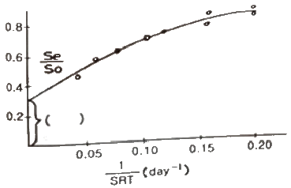
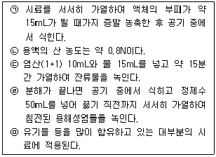
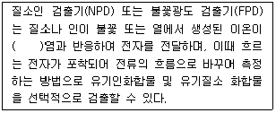
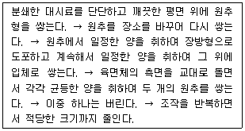
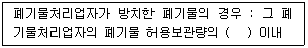
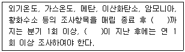
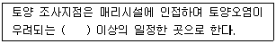
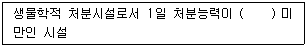

폐기물처리기사 (2018-03-04 기출문제)
1과목: 폐기물 개론
1. 적정한 수집ㆍ운반시스템에 대한 대책을 수립하는 과저에서 검토해야 할 항목으로 가장 거리가 먼 것은?
- 수집구역
- 배출방법
- 수집빈도
- 최종처분
(정답률: 84%)

2. 혐기성소화에 대한 설명으로 틀린 것은?
- 가수분해, 산생성, 메탄생성 단계로 구분된다.
- 처리속도가 느리고 고농도 처리에 적합하다.
- 호기성처리에 비해 동력비 및 유지관리비가 적게 든다.
- 유기산의 농도가 높을수록 처리효율이 좋아진다.
(정답률: 70%)
3. 폐기물 선별과정에서 회전방식에 의해 폐기물을 크기에 따라 분리하는데 사용되는 장치는?
- Reciprocating Screen
- Air Classifier
- Ballistic Separator
- Trommel Screen
(정답률: 81%)
4. 수거차의 대기시간이 없이 빠른 시간 내에 적하를 마치므로 적환장 내ㆍ외에서 교통체증 현상을 감소시켜주는 적환 시스템은?
- 직접투하방식
- 저장투하방식
- 간접투하방식
- 압축투하방식
(정답률: 81%)
5. 트롬멜 스크린에 대한 설명으로 틀린 것은?
- 수평으로 회전하는 직경 3미터 정도의 원통형태이며 가장 널리 사용되는 스크린의 하나이다.
- 최적회전속도는 임계회전속도의 45% 정도이다.
- 도시폐기물 처리 시 적정회전속도는 100~180rpm이다.
- 경사도는 대개 2~3˚를 채택하고 있다.
(정답률: 77%)
6. 굴림통 분쇄기(Roll Crusher)에 관한 설명으로 틀린 것은?
- 재회수과정에서 유리같이 깨지기 쉬운 물질을 분쇄할 때 이용된다.
- 퍼짐성이 있는 금속캔류는 단순히 납작하게 된다.
- 유리와 금속류가 섞인 폐기물을 굴림통분쇄기에 투입하면 분쇄된 유리를 체로 쳐서 쉽게 분리할 수 있다.
- 분쇄는 투입물 선별 과정과 이것을 압축시키는 두 가지 과정으로 구성된다.
(정답률: 57%)
7. 도시폐기물의 물리적 특성 중 하나인 겉보기 밀도의 대표값이 가장 높은 것은? (단, 비압축 상태 기준)
- 재
- 고무류
- 가죽류
- 알루미늄캔
(정답률: 75%)
8. 분뇨처리 결과를 나타낸 그래프의 ( )에 들어갈 말로 가장 알맞은 것은? (단, Se : 유출수위 휘발성 고형물질 농도(mg/L), So : 유입수의 휘발성 고형물질 농도(mg/L), So : 유입수의 휘발성 고형물질 농도(mg/L), SRT : 고형물질의 체류시간)

- 생물학적 분해 가능한 유기물질 분율
- 생물학적 분해 불가능한 휘발성 고형물질 분율
- 생물학적 분해 가능한 무기물질 분율
- 생물학적 분해 불가능한 유기물질 분율
(정답률: 72%)
9. 다음 유기물 중 분해가 가장 빠른 것은?
- 리그닌
- 단백질
- 셀룰로오즈
- 헤미셀룰로오즈
(정답률: 61%)
10. 분뇨를 혐기성 소화공법으로 처리할 때 발생하는 CH4가스의 부피는 분뇨투입량의 약 8배라고 한다. 1일 분뇨 500kL/day씩 처리하는 소화시설에서 발생하는 CH4가스를 포함하여 24시간 균등연소 시킬 때 시간당 발열량(kcal/hr)은? (단, CH4가스의 발열량 = 약 5500 kcal/m3)
- 5.5×106
- 2.5×107
- 9.2×105
- 1.5×108
(정답률: 68%)
11. 발열량에 대한 설명으로 옳지 않는 것은?
- 우리나라 소각로의 설계 시 이용하는 열량은 저위발열량이다.
- 수분을 50% 이상 함유하는 쓰레기는 삼성분조성비를 바탕으로 발열량을 측정하여야 오차가 적다.
- 폐기물의 가연분, 수분, 회분의 조성비로 저위발열량을 추정할 수 있다.
- Dulong 공식에 의한 발열량 계산은 화학적 원소분석을 기초로 한다.
(정답률: 65%)
12. 적환장에 대한 설명으로 가장 거리가 먼 것은?
- 적환장의 위치는 주민들의 생활환경을 고려하여 수거 지역의 무게중심과 되도록 멀리 설치하여야 한다.
- 최종처분지와 수거지역의 거리가 먼 경우 적환장을 설치한다.
- 작은 용량의 차량을 이용하여 폐기물을 수집해야 할 때 필요한 시설이다.
- 폐기물의 수거와 운반을 분리하는 기능을 한다.
(정답률: 87%)
13. 쓰레기의 성상분석 절차로 가장 옳은 것은?
- 시료 → 전처리 → 물리적조성 분류 → 밀도측정 → 건조→ 분류
- 시료 → 전처리 → 건조 → 분류 → 물리적조성 분류 → 밀도측정
- 시료 → 밀도측정 → 건조 → 분류 → 전처리 → 물리적조성 분류
- 시료 → 밀도측정 → 물리적조성 분류 → 건조 → 분류→ 전처리
(정답률: 77%)
14. 폐기물의 운송기술에 대한 설명으로 틀린 것은?
- 파이프라인(pipe-line) 수송은 폐기물의 발생 빈도가 높은 곳에서는 현실성이 있다.
- 모노레일(mono-rail) 수송은 가설이 곤란하고 설치비가 고가이다.
- 컨베이어(conveyor) 수송은 넓은 지역에서 사용되고 사용 후 세정에 많은 물을 사용해야 한다.
- 파이프라인(pipe-line) 수송은 장거리 이송이 곤란하고 투입구를 이용한 범죄나 사고의 위험이 있다.
(정답률: 76%)
15. 고형분이 20%인 폐기물 12 ton을 건조시켜 함수율이 40%가 되도록 하였을 때 감량된 무게(ton)는? (단, 비중은 1.0 기준)
- 5
- 6
- 7
- 8
(정답률: 61%)
16. 환경경영체제(ISO-14000)에 대한 설명으로 가장 거리가 먼 내용은?
- 기업이 환경문제의 개선을 위해 자발적으로 도입하는 제도이다.
- 환경사업을 기업 영업의 최우선 과제 중의 하나로 삼는 경영체제이다.
- 기업의 친환경성 이미지에 대한 광고 효과를 위해 도입할 수 있다.
- 전과정평가(LCA)를 이용하여 기업의 환경성과를 측정하기도 한다.
(정답률: 72%)
17. 폐기물 발생량 조사방법에 관한 설명으로 틀린 것은?
- 물질수지법은 일반적인 생활폐기물 발생량을 추산할 때 주로 이용한다.
- 적재차량 계수분석법은 일정기간 동안 특정지역의 폐기물 수거, 운반차량의 대수를 조사하여, 이 결과에 밀도를 이용하여 질량으로 환산하는 방법이다.
- 직접계근법은 비교적 정확한 폐기물 발생량을 파악할 수 있다.
- 직접계근법은 적재차량 계수 분석에 비하여 작업량이 많고 번거롭다는 단점이 있다.
(정답률: 74%)
18. 폐기물의 성분을 조사한 결과 플라스틱의 함량이 20%(중량비)로 나타났다. 이 폐기물의 밀도가 300kg/m3이라면 6.5m3 중에 함유된 플라스틱의 양(kg)은?
- 300
- 345
- 390
- 415
(정답률: 77%)
19. 폐기물 연소 시 저위발열량과 고위발열량의 차이를 결정짓는 물질은?
- 물
- 탄소
- 소각재의 양
- 유기물 총량
(정답률: 82%)
20. 전과정평가(LCA)를 4단계로 구성할 때 다음 중 가장 거리가 먼 것은?
- 영향평가
- 목록분석
- 해석(개선평가)
- 현황조사
(정답률: 82%)
2과목: 폐기물 처리 기술
21. 흔히 사용되는 폐기물 고화처리 방법은 보통 포틀랜드 시멘트를 이용한 방법이다. 보통 포틀랜드 시멘트에서 가장 많이 함유한 성분은?
- SiO2
- Al2O3
- Fe2O3
- CaO
(정답률: 65%)
22. 합성차수막인 CSPE에 관한 설명으로 옳지 않은 것은?
- 미생물에 강하다.
- 강도가 약하다.
- 접합이 용이하다.
- 산과 알칼리에 약하다.
(정답률: 60%)
23. 다음 조건의 관리형 매립지에서 침출수의 통과 년 수는? (단, 점토층 두께=1m, 유효공극률=0.2, 투수 계수=10-7cm/sec, 침출수 수두=0.4m, 기타 조건은 고려하지 않음)
- 약 6.33년
- 약 5.24년
- 약 4.53년
- 약 3.81년
(정답률: 55%)
24. 수중 유기화합물의 활성탄 흡착에 관한 사항으로 틀린 것은?
- 가지구조의 화합물이 직선구조의 화합물보다 잘 흡착된다.
- 기공확산이 율속단계인 경우, 분자량이 클수록 흡착속도는 늦다.
- 불포화탄화수소가 포화탄화수소보다 잘 흡착된다.
- 물에 대한 용해도가 높은 화합물이 낮은 화합물보다 잘 흡착된다.
(정답률: 63%)
25. 토양수분장력이 100,000cm의 물기둥 높이의 압력과 같다면 pF(Potential Force)의 값은?
- 4.5
- 5.0
- 5.5
- 6.0
(정답률: 73%)
26. 수거분뇨 1kL를 전처기(SS제거율 30%)하여 발생한 슬러지를 수분함량 80%로 탈수한 슬러지량(kg)은? (단, 수거분뇨 SS농도=4%, 비중=1.0 기준)
- 20
- 40
- 60
- 80
(정답률: 49%)
27. 다이옥신과 퓨란에 대한 설명으로 틀린 것은?
- PVC 또는 플라스틱 등을 포함하는 합성물질을 연소시킬 때 발생한다.
- 여러 개의 염소원자와 1~2개의 수소원자가 결합된 두 개의 벤젠고리를 포함하고 있다.
- 다이옥신의 이성체는 75개이고, 퓨란은 135개이다.
- 2, 3, 7, 8 PCDD의 독성계수가 1이며 여타 이성체는 1보다 작은 등가계수를 갖는다.
(정답률: 66%)
28. 뒤집기 퇴비단공법의 장점이 아닌 것은?
- 건조가 빠르다.
- 병원균 파괴율이 높다.
- 많은 양을 다룰 수 있다.
- 상대적으로 투자비가 낮다.
(정답률: 49%)
29. 혐기성 분해 시 메탄균은 pH에 민감하다. 메탄균의 최적 환경으로 가장 적합한 것은?
- 강산성 상태
- 약산성 상태
- 약알칼리성 상태
- 강알칼리성 상태
(정답률: 64%)
30. 고형물농도 80kg/m3의 농축 슬러지를 1시간에 8m3 탈수시키려 한다. 슬러지 중의 고형물 당 소석회 첨가량을 중량기준으로 20% 첨가했을 때 함수율 90%의 탈수 cake가 얻어졌다. 이 탈수 cake의 겉보기 비중량을 1000kg/m3로 할 경우 발생 cake의 부피(m3/hr)는?
- 약 5.5
- 약 6.6
- 약 7.7
- 약 8.8
(정답률: 53%)
31. 6.3%의 고형물을 함유한 150,000kg의 슬러지를 농축한 수, 소화조로 이송할 경우 농축슬러지의 무게는 70,000kg 이다. 이때 소화조로 이송한 농축된 슬러지의 고형물 함유율(%)은? (단, 슬러지의 비중=1.0, 상등액의 고형물 함량은 무시)
- 11.5
- 13.5
- 15.5
- 17.5
(정답률: 69%)
32. 일반적인 폐기물의 매립방법에 관한 설명 중 틀린 것은?
- 폐기물은 매일 1.8~2.4m의 높이로 매립한다.
- 중간복토는 30cm의 흙으로 덮고 최종복토는 60cm의 흙으로 덮는다.
- 다짐 후 폐기물 밀도가 390~740kg/m3이 되도록 한다.
- 폐기물을 충분히 다짐하면 공기함유량이 감소되어 CH4의 생성이 감소한다.
(정답률: 66%)
33. 차수설비인 복합차수층에서 일반적으로 합성차수막 바로 상부에 위치하는 것은?
- 점토층
- 침출수집배수층
- 차수막지지층
- 공기층(완충지층)
(정답률: 62%)
34. 오염토의 토양증기추출법 복원기술에 대한 장ㆍ단점으로 옳은 것은?
- 증기압이 낮은 오염물질의 제거효율이 높다.
- 다른 시약이 필요 없다.
- 추출된 기체의 대기오염방지를 위한 후처리가 필요없다.
- 유지 및 관리비가 많이 소요된다.
(정답률: 46%)
35. 혐기성 소화공법에 비해 호기성 소화공법이 갖는 장ㆍ단점이라 볼 수 없는 것은?
- 상등액의 BOD농도가 낮다.
- 소화 슬러지량이 많다.
- 소화 슬러지의 탈수성이 좋다.
- 운전이 용이하다.
(정답률: 68%)
36. 매립가스 추출에 대한 설명으로 틀린 것은?
- 매립가스에 의한 환경영향을 최소화하기 위해 매립지 운영 및 사용종료 후에도 지속적으로 매립가스를 강제적으로 추출하여야 한다.
- 굴착정의 깊이는 매립깊이의 75% 수준으로 하며, 바닥 차수층이 손상되지 않도록 주의하여야 한다.
- LFG 추출시에는 공기 중의 산소가 충분히 유입되도록 일정 깊이(6m)까지는 유공부위를 설치하지 않고 그 아래에 유공부위를 설치한다.
- 여름철 집중 호우시 지표면에서 6m이내에 있는 포집정 주위에는 매립지내 지하수위가 상승하여 LFG 진공추출시 지하수도 함께 빨려 올라올 수 있으므로 주의하여야 한다.
(정답률: 51%)
37. 육상매립 공법에 대한 설명으로 틀린 것은?
- 트렌치 굴착 방식(Trench method)은 폐기물을 일정한 두께로 매립한 다음 인접 도랑에서 굴착된 복토재로 복토하는 방법이다.
- 지역식 매립(Area method)은 바닥을 파지 않고 제방을 쌓아 입지조건과 규모에 따라 매립지의 길이를 정한다.
- 트렌치 굴착은 지하수위가 높은 지역에서 가능하다.
- 지역식 매립은 해당지역이 트렌치 굴착을 하기에 적당하지 않은 지역에 적용할 수 있다.
(정답률: 71%)
38. 매립지 침하에 영향을 미치는 내용과 가장 관계가 없는 것은?
- 다짐정도
- 폐기물의 성상
- 생물학적 분해정도
- 차수재 종류
(정답률: 64%)
39. 체의 통과 백분율이 10%, 30%, 50%, 60%인 입자의 직경이 각각 0.⑤mm 0.15m, 0.45mm, 0.55mm일 때 곡률계수는?
- 0.82
- 1.32
- 2.76
- 3.71
(정답률: 72%)
40. 소각로에서 발생되는 다이옥신을 저감하기 위한 방법으로 잘못 설명된 것은?
- 쓰레기 조성 및 공급특성을 일정하게 유지하여 정상 소각이 되도록 한다.
- 미국 EPA에서는 다이옥신 제어를 위해 완전혼합 상태에서 평균 980℃ 이상으로 소각하도록 권장하고 있다.
- 쓰레기 소각로로부터 빠져나가는 이월(carryover) 입자의 양을 최대화하도록 한다.
- 연소기 출구와 굴뚝사이의 후류온도를 조절하여 다이옥신이 재형성되지 않도록 한다.
(정답률: 71%)
3과목: 폐기물 소각 및 열회수
41. 폐기물을 소가할 때 발생하는 폐열을 회수하여 이용할 수 있는 보일러에 대한 설명으로 틀린 것은?
- 보일러의 배출가스 온도는 대략 100~200℃이다.
- 보일러는 연료의 연소열을 압력용기 속의 물로 전달하여 소요압력의 증기를 발생시키는 장치이다.
- 보일러의 용량 표시는 정격증발량으로 나타내는 경우와 환산증발량으로 나타내는 경우가 있다.
- 보일러의 효율은 연료의 연소에 의한 화학에너지가 열에너지로 전달되었는가를 나타내는 것이다.
(정답률: 61%)
42. 유동상 소각로의 특징으로 옳지 않은 것은?
- 과잉공기율이 작아도 된다.
- 층내 압력손실이 작다.
- 층내 온도의 제어가 용이하다.
- 노부하율이 높다.
(정답률: 44%)
43. 저위발열량 10,000kcal/Sm3인 기체연료 연소 시, 이론습연소가스량이 20Sm3/Sm3이고 이론연소온도는 2,500℃라고 한다. 연료연소가스의 평균 정압비열(kcal/Sm3ㆍ℃)은? (단, 연소용 공기, 연료 온도=15℃)
- 0.2
- 0.3
- 0.4
- 0.5
(정답률: 52%)
44. 폐기물 소각로의 종류 중 회전로식 소각로(Rotary Kiln Incinerator)의 장점이 아닌 것은?
- 소각대상물에 관계없이 소각이 가능하며 또한 연속적으로 재 배출이 가능하다.
- 연소실내 폐기물의 체류시간은 노의 회전속도를 조절함으로써 가능하다.
- 연소효율이 높으며, 미연소분의 배출이 적고 2차 연소실이 불필요하다.
- 소각대상물의 전처리 과정이 불필요하다.
(정답률: 59%)
45. 메탄 80%, 에탄 11%, 프로판 6%, 나머지는 부탄으로 구성된 기체연료의 고위발열량이 10,000kcal/Sm3이다. 기체연료의 저위발열량(kcal/Sm3)은?
- 약 8100
- 약 8300
- 약 8500
- 약 8900
(정답률: 55%)
46. 표면연소에 대한 설명으로 옳은 것은?
- 코크스나 목탄과 같은 휘발성 성분이 거의 없는 연료의 연소형태를 말한다.
- 휘발유와 같이 끓는점이 낮은 기름의 연소나 왁스가 액화하여 다시 기화되어 연소하는 것을 말한다.
- 기체연료와 같이 공기의 확산에 의한 연소를 말한다.
- 니트로글리세린 등과 같이 공기 중 산소를 필요로 하지 않고 분자 자신 속의 산소에 의해서 연소하는 것을 말한다.
(정답률: 76%)
47. 슬러지 소각에 부적합한 소각로는?
- 고정상 소각로
- 다단로 소각로
- 유동층 소각로
- 화격자 소각로
(정답률: 45%)
48. 수분함량이 20%인 폐기물의 발열량을 단열열량계로 분석한 결과가 1500kcal/kg 이라면 저위발열량(kcal/kg)은?
- 1320
- 1380
- 1410
- 1500
(정답률: 62%)
49. 소각로에 폐기물을 연속적으로 주입하기 위해서는 충분한 저장시설을 확보하여야 한다. 연속주입을 위한 폐기물의 일반적인 저장시설 크기로 적당한 것은?
- 24~36시간분
- 2~3일분
- 7~10일분
- 15~20일분
(정답률: 74%)
50. 열분해에 의한 에너지 회수법의 단점으로 옳지 않은 것은?
- 보일러 튜브가 쉽게 부식된다.
- 초기 시설비가 매우 높다.
- 열공급에 대한 확실성이 없으며 또한 시장의 절대적 화보가 어렵다.
- 지역난방에 효과적이지 못하다.
(정답률: 58%)
51. 액체 주입형 소각로의 단점이 아닌 것은?
- 대기오염 방지시설 이외에 소각제 처리설비가 필요하다.
- 완전히 연소시켜 주어야 하며 내화물의 파손을 막아주어야 한다.
- 고농도 고형분으로 인하여 버너가 막히기 쉽다.
- 대량 처리가 어렵다.
(정답률: 57%)
52. 소각능이 있는 1200kg/m2ㆍhr인 스토커형 소각로에서 1일 80톤의 폐기물을 소각시킨다. 이 소각로의 화격자 면적(m2)은? (단, 소각로는 1일 16시간 가동한다.)
- 약 2.1
- 약 2.8
- 약 4.2
- 약 6.6
(정답률: 65%)
53. 표준상태(0℃, 1기압)에서 어떤 배기가스 내에 CO2 농도가 0.⑤%라면 몇 mg/m3에 해당되는가?
- 832
- 982
- 1124
- 1243
(정답률: 62%)
54. 열분해 방법을 습식산화법, 저온열분해, 고온열 분해로 구분할 때 각각의 온도영역을 순서대로 나열한 것은?
- 100~200℃, 300~400℃, 700~800℃
- 200~300℃, 400~600℃, 900~1000℃
- 200~300℃, 500~900℃, 1100~1500℃
- 300~500℃, 700~900℃, 1100~1500℃
(정답률: 65%)
55. 폐기물 소각 연소과정에서 연소효율을 향상시키는 대책이 아닌 것은?
- 복사 전열에 의한 방열손실을 최대한 줄인다.
- 연소생성 열량을 피연소물에 유효하게 전달하고 배기가스에 의한 열손실을 줄인다.
- 연소과정에서 발생하는 배기가스를 재순환시켜 전열효율을 높이고, 최종 배출가스 온도를 높이다.
- 연소잔사에 의한 열손실을 줄인다.
(정답률: 60%)
56. 연소시키는 물질의 발화온도, 함수량, 공급공기량, 연소기의 형태에 따라 연소온도가 변화된다. 연소온도에 관한 설명 중 옳지 않은 것은?
- 연소온도가 낮아지면 불완전 연소로 HC나 CO 등이 생성되며 냄새가 발생된다.
- 연소온도가 너무 높아지면 NOx나 SOx가 생성되며 냉각공기의 주입량이 많아지게 된다.
- 소각로의 최소온도는 650℃ 정도이지만 스팀으로 에너지를 회수하는 경우에는 연소온도를 870℃ 정도로 높인다.
- 함수율이 높으면 연소온도가 상승하며, 연소물질의 입자가 커지면 연소시간이 짧아진다.
(정답률: 68%)
57. 폐기물 소각 후 발생하는 소각재의 처리방법에는 여러 가지가 있다. 소각재 고형화 처리방식이 아닌 것은?
- 전기를 이용한 포졸란 고화방식
- 시멘트를 이용한 콘크리트 고화방식
- 아스팔트를 이용한 아스팔트 고화방식
- 킬레이트 등 약제를 이용한 고화방식
(정답률: 56%)
58. 폐기물 중 가연분을 셀룰로오스로 간주하여 계산하는 값은?
- 최대이산화탄소 발생량
- 이론 산소량
- 이론 공기량
- 과잉공기계수
(정답률: 49%)
59. 도시폐기물 성분 중 수소 5kg이 완전연소 되었을 때 필요로 한 이론적 산소요구량(kg)과 연소생성물인 수분의 양(kg)은? (단, 산소(O2), 수분(H2O) 순서)
- 25, 30
- 30, 35
- 35, 40
- 40, 45
(정답률: 56%)
60. 폐기물의 조성이 C8H20O16N10S이라면 고위발열량을 Dulong식을 이용하여 계산한 값(kcal/kg)은?(문제 오류로 가답안 발표시 2번으로 발표되었으나 확정답안 발표시 전항 정답 처리 되었습니다. 여기서는 가답안인 2번을 누르면 정답 처리 됩니다.)
- 약 810
- 약 890
- 약 910
- 약 1090
(정답률: 27%)
4과목: 폐기물 공정시험기준(방법)
61. 시료의 전처리방법 중 질산-황산에 의한 유기물분해에 해당하는 항목들로 짝지어진 것은?

- ㉡, ㉢, ㉣
- ㉢, ㉣, ㉤
- ㉠, ㉣, ㉤
- ㉠, ㉢, ㉤
(정답률: 50%)
62. 기체크로마토그래피로 유기인 분석 시 검출기에 관한 설명으로 ( )에 알맞은 것은?

- 세슘
- 루비듐
- 프란슘
- 니켈
(정답률: 71%)
63. 금속류-원자흡수분광광도법에 대한 설명으로 옳지 않은 것은?
- 폐기물 중의 구리, 납, 카드뮴 등의 측정 방법으로, 질산을 가한 시료 또는 산 분해 후 농축시료를 직접 불꽃으로 주입하여 원자화 한 후 원자흡수분광광도법으로 분석한다.
- 정확도는 첨가한 표준물질의 농도에 대한 측정 평균값의 상대 백분율로 나타내고 그 값이 75~125 % 이내이어야 한다.
- 원자흡수분광광도계(AAS)는 일반적으로 광원부, 시료원자화부, 파장선택부 및 측광부로 구성되어 있으며 단광속형과 복광속형으로 구분된다.
- 원자흡수분광광도계에 불꽃을 만들기 위해 가연성기체와 조연성기체를 사용하는데, 일반적으로 조연성기체로 아세틸렌을 가연성기체로 공기를 사용한다.
(정답률: 65%)
64. 총칙의 용어 설명으로 옳지 않은 것은?
- 액상폐기물이란 함은 고형물의 함량이 5% 미만인 것을 말한다.
- 방울수라 함은 20℃에서 정제수 20방울을 적하할 때, 그 부피가 약 0.1mL 되는 것을 뜻한다.
- 시험조작 중 즉시란 30초 이내에 표시된 조작을 하는 것을 뜻한다.
- 고상폐기물이라 함은 고형물의 함량이 15% 이상인 것을 말한다.
(정답률: 75%)
65. 유도결합플라즈마-원자발광분광법(ICP)에 의한 중금속 측정 원리에 대한 설명으로 옳은 것은?
- 고온(6000~8000K)에서 들뜬 원자가 바닥상태로 이동할 때 방출하는 발광강도를 측정한다.
- 고온(6000~8000K)에서 들뜬 원자가 바닥상태로 이동할 때 흡수되는 흡광강도를 측정한다.
- 바닥상태의 원자가 고온(6000~8000K)에서 들뜬상태로 이동할 때 방출되는 발광강도를 측정한다.
- 바닥상태의 원자가 고온(6000~8000K)에서 들뜬상태로 이동할 때 흡수되는 발광강도를 측정한다.
(정답률: 60%)
66. PCBs를 기체크로마토그래피로 분석할 때 실리카겔 칼럼에 무수황산나트륨을 첨가하는 이유는?
- 유분제거
- 수분제거
- 미량 중금속제거
- 먼지제거
(정답률: 55%)
67. 용매추출 후 기체크로마토그래피를 이용하여 휘발성 저급염소화 탄화수소류 분석시 가장 적합한 물질은?
- Dioxin
- Polychlorinated biphenyls
- Trichloroethylene
- Polyvinylchloride
(정답률: 67%)
68. 유도결합플라즈마-원자발광광도계 구성장치로 가장 옳은 것은?
- 시료 도입부, 고주파전원부, 광원부, 분광부, 연산처리부, 기록부
- 시료 도입부, 시료 원자화부, 광원부, 측광부, 연산처리부, 기록부
- 시료 도입부, 고주파전워부, 광원부, 파장선택부, 연산처리부, 기록부
- 시료 도입부, 시료 원자화부, 파장선택부, 측광부, 연산처리부, 기록부
(정답률: 52%)
69. 발색 용액의 흡광도를 20mm셀을 사용하여 측정한 결과 흡광도는 1.34이었다. 이 액을 10mm의 셀로 측정한다면 흡광도는?
- 0.32
- 0.67
- 1.34
- 2.68
(정답률: 62%)
70. 자외선/가시선 분광법에서 램버어트 비어의 법칙을 올바르게 나타내는 식은? (단, Io=입사강도, It=투과강도, ℓ=셀의 두께, ε=상수, C=농도)
- It = Io 10-εCℓ
- Io = It10-εCℓ
- It= C Io 10-εℓ
- Io = ℓIt 10-εC
(정답률: 69%)
71. 강열감량 및 유기물 함량을 중량법으로 분석 시 이에 대한 설명으로 옳지 않은 것은?
- 실에 질산암모늄용액(25%)을 넣고 가열한다.
- 600±25℃의 전기로 안에서 1시간 강열한다.
- 시료는 24시간 이내에 증발 처리를 하는 것이 원칙이며, 부득이한 경우에는 최대 7일을 넘기지 말아야 한다.
- 용기 벽에 부착하거나 바닥에 가라앉는 물질이 있는 경우에는 시료를 분취하는 과정에서 오차가 발생할 수 있다.
(정답률: 56%)
72. 원자흡수분광광도법 분석 시, 질산-염산법으로 유기물을 분해시켜 분석한 결과 폐기물시료량 5g, 최종 여액량 100mL, Pb농도가 20mg/L였다면, 이 폐기물의 Pb함유량(mg/kg)은?
- 100
- 200
- 300
- 400
(정답률: 57%)
73. '항량으로 될 때가지 건조한다.'라 함은 같은 조건에서 1시간 더 건조할 때 전후 무게의 차가 g당 mg 이하일 때를 말하는가?
- 0.01mg
- 0.03mg
- 0.1mg
- 0.3mg
(정답률: 61%)
74. pH가 2인 용액 2L와 pH가 1인 용액 2L를 혼합하였을 때 pH는?
- 약 1.0
- 약 1.3
- 약 1.5
- 약 1.8
(정답률: 57%)
75. 자외선/가시선 분광법으로 납을 측정할 때 전처리를 하지 않고 직접 시료를 사용하는 경우 시료 중에 시안화합물이 함유되었을 때 조치사항으로 옳은 것은?
- 염산 산성으로 하여 끓여 시안화물을 완전히 분해 제거한다.
- 사염화탄소로 추출하고 수층을 분리하여 시안화물을 완전히 제거한다.
- 음이온 계면활성제와 소량의 활성탄을 주입하여 시안화물을 완전히 흡착 제거한다.
- 질산(1+5)와 과산화수소를 가하여 시안화물을 완전히 분해 제거한다.
(정답률: 36%)
76. 환경측정의 정도보증/정도관리(QA/AC)에서 검정곡선방법으로 옳지 않은 것은?
- 절대검정곡선법
- 표준물질첨가법
- 상대검정곡선법
- 외부표준법
(정답률: 66%)
77. 용출시험방법에서 함수율 95%인 시료의 용출시험결과에 수분함량 보정을 위해 곱해야 하는 값은?
- 1.5
- 3.0
- 4.5
- 5.0
(정답률: 71%)
78. 원자흡수분광광도법으로 수은을 측정하고자 한다. 분석절차(전처리) 과정 중 과잉의 과망가산칼륨을 분해하기 위해 사용하는 용액은?
- 10W/V% 염화하이드록시암모늄용액
- (1+4) 암모니아수
- 10W/V% 아염화주석용액
- 10W/V% 과황산칼륨
(정답률: 49%)
79. 시료의 조제방법으로 옳지 않은 것은?
- 돌멩이 등의 이물질을 제거하고, 입경이 5mm 이상인 것은 분쇄하여 체로 거른 후 입경이 0.5~5mm로 한다.
- 시료의 축소방법으로는 구획법, 교호삽법, 원추4분법이 있다.
- 원추4분법을 3회 시행하면 원래 양의 1/3이 된다.
- 교호삽법과 원추4분법은 축소과정에서 공히 원추를 쌓는다.
(정답률: 77%)
80. 아래와 같은 방식으로 폐기물 시료의 크기를 줄이는 방법은?

- 원추2분법
- 원추4분법
- 교호삽법
- 구획법
(정답률: 68%)
5과목: 폐기물 관계 법규
81. 환경부령으로 정하는 폐기물처리시설의 설치를 마친 자는 환경부령으로 정하는 검사기관으로부터 검사를 받아야 한다. 멸균분쇄시설의 검사기관이 아닌 것은?
- 한국기계연구원
- 보건환경연구원
- 한국산업기술시험원
- 한국환경공단
(정답률: 56%)
82. 폐기물관리법의 제정 목적으로 가장 거리가 먼 것은?
- 폐기물 발생을 최대한 억제
- 발생한 폐기물을 친환경적으로 처리
- 환경보전과 국민생활의 질적 향상에 이바지
- 발생 폐기물의 신속한 수거ㆍ이송처리
(정답률: 61%)
83. 관리형 매립시설에서 발생하는 침출수의 배출허용기준(BOD - SS 순서)은? (단, 가 지역, 단위 mg/L)
- 30 – 30
- 30 - 50
- 50 – 50
- 50 - 70
(정답률: 63%)
84. 폐기물부담금 및 재활용부담금의 용도로 틀린 것은?
- 재활용가능자원의 구입 및 비축
- 재활용을 촉진하기 위한 사업의 지원
- 폐기물부담금(가산금을 제외한다) 또는 재활용부과금(가산금을 제외한다)의 징수비용 교부
- 폐기물의 재활용을 위한 사업 및 폐기물처리시설의 설치 지원
(정답률: 51%)
85. 폐기물처리업의 업종구분과 영업내용을 연결한 것으로 틀린 것은?
- 폐기물 수집ㆍ운반업 - 폐기물을 수집하여 재활용 또는 처분 장소로 운반하거나 폐기물을 수출하기 위하여 수집ㆍ운반하는 영업
- 폐기물 중간처분업 - 폐기물 중간처분시설 및 최종처분시설을 갖추고 폐기물을 소각ㆍ중화ㆍ파쇄ㆍ고형화 등의 방법에 의하여 중간처분 및 중간가공 폐기물을 만드는 영업
- 폐기물 최종처분업 - 폐기물 최종처분시설을 갖추고 폐기물을 매립 등(해역 배출은 제외한다)의 방법으로 최종처분하는 영업
- 폐기물 종합처분업 - 폐기물 중간처분시설 및 최종처분시설을 갖추고 폐기물의 중간처분과 최종처분을 함께 하는 영업
(정답률: 52%)
86. 폐기물 재활용업자가 시ㆍ도지사로부터 승인받은 임시보관시설에 태반을 보관하는 경우, 시ㆍ도지사가 입시보관시설을 승인할 때 따라야 하는 기준으로 틀린 것은? (단, 폐기물처리사업장 외의 장소에서의 폐기물 보관시설 기준)
- 폐기물 재활용업자는 약사법에 따른 의약품제조업 허가를 받은 자일 것
- 태반의 배출장소와 그 태반 재활용시설이 있는 사업장의 거리가 100킬로미터 이상일 것
- 임시보관시설에서의 태반 보관 허용량은 1톤 미만일 것
- 임시보관시설에서의 태반 보관 기간은 태반이 임시보관시설에 도착한 날부터 5일 이내일 것
(정답률: 57%)
87. 환경부장과 또는 시ㆍ도지사가 폐기물처리 공제조합에 처리를 명할 수 있는 방치폐기물의 처리량 기준으로 ( )에 맞는 것은?

- 1.5배
- 2.0배
- 2.5배
- 3.0배
(정답률: 72%)
88. 매립시설의 사후관리기준 및 방법에 관한 내용 중 발생가스 관리방법(유기성폐기물을 매립한 폐기물매립시설만 해당된다.)에 관한 내용이다. ( )에 공통으로 들어갈 내용은?

- 1년
- 2년
- 3년
- 5년
(정답률: 52%)
89. 해당 폐기물처리 신고자가 보관 중이 폐기물 또는 그 폐기물처리의 이용자가 보관 중인 폐기물의 적체에 따른 환경오염으로 인하여 인근지역 주민의 건강에 위해가 발생되거나 발생될 우려가 있는 경우, 그 처리금지를 갈음하여 부과할 수 있는 과징금은?
- 2천만원 이하
- 5천만원 이하
- 1억원 이하
- 2억원 이하
(정답률: 51%)
90. 폐기물의 에너지회수기준으로 옳지 않은 것은?
- 에너지 회수효율(회수에너지 총량을 투입에너지 총량으로 나눈 비율)이 75퍼센트 이상일 것
- 다른 물질과 혼합하지 아니하고 해당 폐기물의 저위발열량이 킬로그램당 3천 킬로칼로리 이상일 것
- 폐기물의 50% 이상을 원료 또는 재료로 재활용하고 나머지를 에너지회수에 이용할 것
- 회수열을 모두 열원으로 스스로 이용하거나 다른 사람에게 공급할 것
(정답률: 68%)
91. 폐기물처리시설의 설치ㆍ운영을 위탁받을 수 있는 자의 기준 중 소각시설인 경우, 보유하여야 하는 기술인력 기준에 포함되지 않는 것은?
- 폐기물처리기술사 1명
- 폐기물처리기술사 또는 대기환경기사 1명
- 토목기사 1명
- 시공분야에서 2년 이상 근무한 자 2명(폐기물 처분시설의 설치를 위탁받으려는 경우에만 해당한다.)
(정답률: 59%)
92. 폐기물처리시설 주변 지역 영향조사 기준 중 조사지점에 관한 사항으로 ( )에 옳은 것은?

- 2개소
- 3개소
- 4개소
- 5개소
(정답률: 53%)
93. 폐기물의 광역관리를 위해 광역 폐기물처리시설의 설치 또는 운영을 위탁할 수 없는 자는?
- 해당 광역 폐기물처리시설을 발주한 지자체
- 한국환경공단
- 수도권매립지관리공사
- 폐기물의 광역처리를 위해 설립된 지방자치단체조합
(정답률: 55%)
94. 설치신고대상 폐기물처분시설 규모기준으로 ( )에 맞는 것은?

- 5톤
- 10톤
- 50톤
- 100톤
(정답률: 61%)
95. 기술관리인을 두어야 할 폐기물처리시설이 아닌 것은?
- 시간당 처분능력이 120킬로그램인 의료폐기물 대상 소각시설
- 면적이 4천 제곱미터인 지정폐기물 매립시설
- 절단시설로서 1일 처분능력이 200톤인 시설
- 연료화시설로서 1일 처분능력이 7톤인 시설
(정답률: 49%)
96. 폐기물관리의 기본원칙으로 틀린 것은?
- 폐기물은 소각, 매립 등의 처분을 하기 보다는 우선적으로 재활용함으로써 자원생산성의 향상에 이바지하도록 하여야 한다.
- 국내에서 발생한 폐기물은 가능하면 국내에서 처리되어야 하고, 폐기물은 수입할 수 없다.
- 누구든지 폐기물을 배출하는 경우에는 주변 환경이나 주민의 건강에 위해를 끼치지 아니하도록 사전에 적절한 조치를 하여야 한다.
- 사업자는 제품의 생산방식 등을 개선하여 폐기물의 발생을 최대한 억제하고, 발생한 폐기물을 스스로 재활용함으로써 폐기물의 배출을 최소화하여야 한다.
(정답률: 65%)
97. 폐기물처리시설 설치에 있어서 승인을 받았거나 신고한 사항 중 환경부령으로 정하는 중요사항을 변경하려는 경우, 변경승인을 받지 아니하고 승인 받은 사항을 변경한 자에 대한 벌칙 기준은?
- 5년 이하의 징역 또는 5천만원 이하의 벌금
- 3년 이하의 징역 또는 3천만원 이하의 벌금
- 2년 이하의 징역 또는 2천만원 이하의 벌금
- 1년 이하의 징역 또는 1천만원 이하의 벌금
(정답률: 37%)
98. 주변지역 영향 조사대상 폐기물처리시설에 해다하지 않는 것은? (단, 대통령령으로 정하는 폐기물처리시설로 폐기물처리업자가 설치ㆍ운영하는 시설)
- 시멘트 소성로(폐기물을 연료로 사용하는 경우는 제외한다.)
- 매립면적 15만 제곱미터 이상의 사업장 일반폐기물 매립시설
- 매립면적 1만 제곱미터 이상의 사업장 지정폐기물 매립시설
- 1일 처분능력이 50톤 이상인 사업장폐기물 소각시설(같은 사업장에 여러 개의 소각시설이 있는 경우에는 각 소각시설의 1일 처분능력의 합계가 50톤 이상인 경우를 말한다.)
(정답률: 50%)
99. 폐기물 처리시설의 사후관리에 대한 내용으로 틀린 것은?
- 폐기물을 매립하는 시설을 사용종료하거나 폐쇄하려는 자는 검사기관으로부터 환경부령으로 정하는 검사에서 적합판정을 받아야 한다.
- 매립시설의 사용을 끝내거나 폐쇄하려는 자는 그 시설의 사용종료일 또는 폐쇄예정일 1개월 이전에 사용종료ㆍ폐쇄신고서를 시ㆍ도지사나 지방환경관서의 장에게 제출하여야 한다.
- 폐기물 매립시설을 사용종료하거나 폐쇄한 자는 그 시설로 인한 주민의 피해를 방지하기 위해 환경부령으로 정하는 침출수 처리시설을 설치ㆍ가동하는 등의 사후관리를 하여야 한다.
- 시ㆍ도지사나 지방환경관서의 장이 사후관리 시정명령을 하려면 그 시정에 필요한 조치의 난이도 등을 고려하여 6개월 범위에서 그 이행기간을 정하여야 한다.
(정답률: 47%)
100. 한국폐기물협회에 관한 내용으로 틀린 것은?
- 환경부장관의 허가를 받아 한국폐기물협회를 설립할 수 있다.
- 한국폐기물협회는 법인으로 한다.
- 한국폐기물협회의 업무, 조직, 운영 등에 관한 사항은 환경부령으로 정한다.
- 폐기물산업의 발전을 위한 지도 및 조사ㆍ연구 업무를 수행한다.
(정답률: 57%)